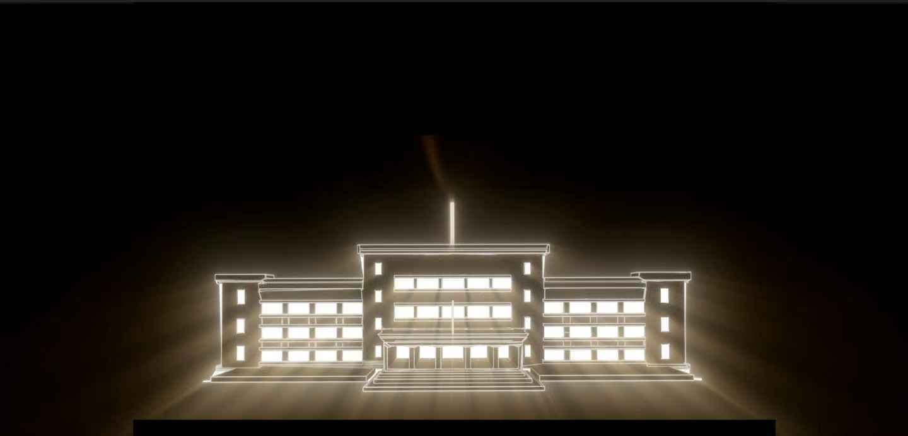
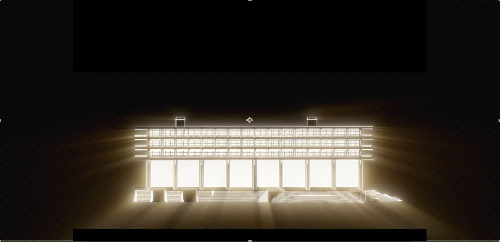
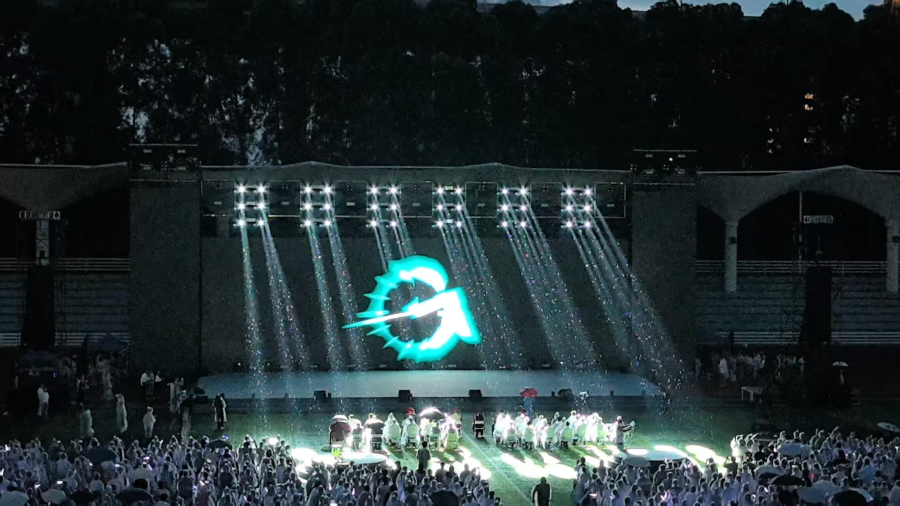

光之门 · 广美毕业季
创意阐述 Concept
本项目以“光之门”为视觉核心意象，结合广美建筑的时代变迁进行视觉重构。通过 AI 影像与 3D 渲染技术，打造跨越现实与虚构的沉浸式开场影像。
以“现实与虚拟的穿越”为叙事线，将建筑轮廓以光线勾勒，再由粒子光束、能量线条等视觉元素推动节奏，让观众在开场瞬间进入仪式性的情绪场景。
视觉演变 Visual Evolution
从 1953 年代的老建筑到当下校园的空间符号，连续生成光的序列：

01. 历史的回响 (1953)
以简单的线条勾勒老校门，象征广美的起点与初心。

02. 当下的辉煌
点亮现代教学楼，光影从内部透出，象征知识与创意的汇聚。

03. 未来的展望
建筑结构在粒子流中解构重组，形成通往未来的光之隧道。
现场呈现 Live Show

毕业季开幕式现场实拍
负责内容 My Role
- 创意策划： 视觉概念设定与分镜设计。
- AI 辅助： 使用 AI 生成风格化贴图与氛围参考。
- 3D 制作： 校园建筑建模与 Octane 渲染。
- 后期合成： 镜头动效与光影合成。